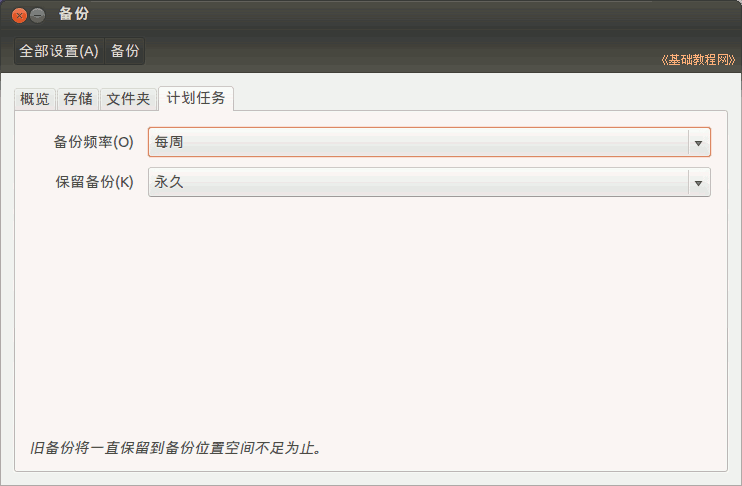

Ubuntu 入门操作指南
作者：TeliuTe 来源：基础教程网
二十四、备份和恢复 返回目录 下一课使用备份工具可以备份指定的文件夹，也可以从备份中恢复；
1、备份
1）点击主按钮，在搜索中输入 deja-dup，打开备份程序，或者依次点主按钮、所有程序、过滤结果、附件、备份；
2）第一个标签是概览，可以设置是否自动备份，选择“立即备份”或“恢复”；
3）点击第二个标签“存储”，可以设置备份文件是存放在网络上还是本地文件夹，默认是存放在 Ubuntu One 云上；
4）点第三个标签“文件夹”，设置备份哪些文件夹，默认备份自己的主文件夹，排除哪些文件夹，点下边的“+”添加、“-”删除；
5）点最后的计划任务标签，查看一下备份频率，以及备份保存的时间；

6）选择要备份的文件夹，回到第一个“概览”标签，点击右下角的“立即备份”，按提示操作，在密码那儿可以选择不加密；
7）要恢复的时候，在第一个概览标签中，点右下角的“恢复”按钮，按提示操作；
8）备份文件的管理，也可以登录 Ubuntu One 网站，在 File 里进行管理： https://one.ubuntu.com ；
本节学习了备份和恢复的基础知识，如果你成功地完成了练习，请继续学习下一课内容；
本教程由86团学校TeliuTe制作|著作权所有
基础教程网：http://teliute.org/
美丽的校园……
转载和引用本站内容，请保留作者和本站链接。